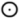
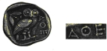

Athena was once the Sphinx in another incarnation, indeed she still wore the Sphinx on her helmet.
The Egyptain outcast, Pharaoh Toth-Moses (Akhenaten) decided to change the religion of his time from that of Amun to that of Athen, The Sun Disc. Akhen means cycle of, and the Aten or (Athen) means The Sun Disc and a circle with a dot in the middle also means the end of a period.

The Secret Doctrine was represented by the Sphinx, which Athena was in another incarnation. The Sphinx is the Eternal Arbiter of Divine Wisdom between the Good and Evil.
ATHEN — ATHENE.
Athene from an early Greek coin (notice the circle with the dot).

In Astrology the same symbol for the Sun is a circle with a dot in it.
The White Goddess. Robert Graves. Faber and Faber 1961. Page 417.
But Athena still wore them on her helmet, for she had once been the Sphinx herself.
The Sirius Mystery. Robert K.G. Temple. Destiny Books Vermont. 1976. Page 184 & 177.
Also the au-ten, athen is the au-t of the sun, or the course of the sun.
Signs in the Sky. Adrian Gilbert. Bantam Press. 2000. Page 111.
‘Like the Athen’, i.e. The Sun Disc.
Secret Teachings Of All Ages. Manly P. Hall. Philo. Research Soc. 1989. Page LXXXVIII. R.H. Bot.
The Sphinx also represented The Secret Doctrine itself.
Secret Teachings Of All Ages. Manly P. Hall. Philo. Research Soc. 1989. Page CXXXI. L.H.
Divine Wisdom the Sphinx as the Eternal Arbiter between good and evil.